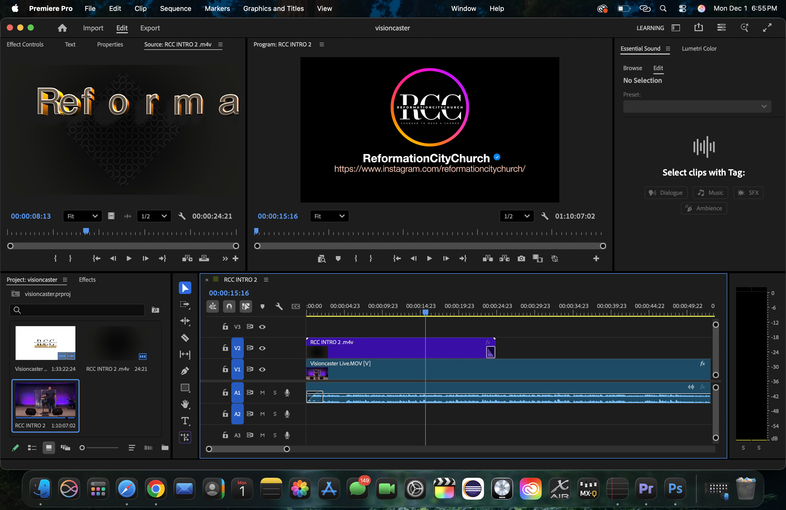
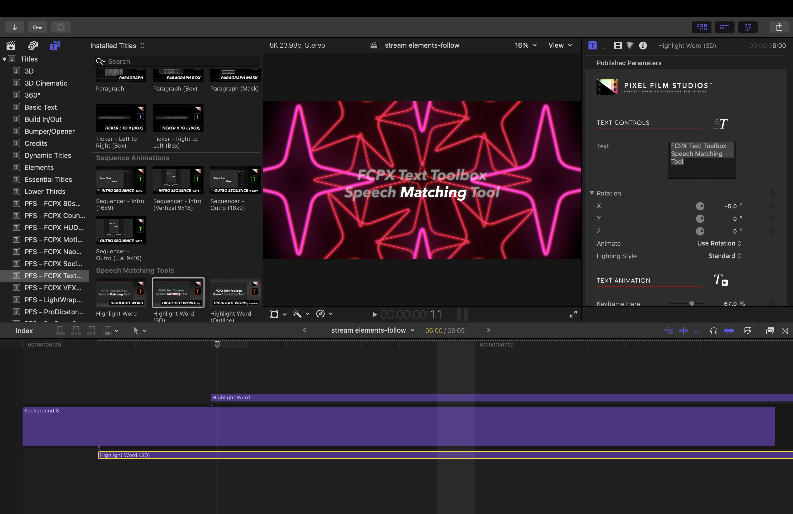
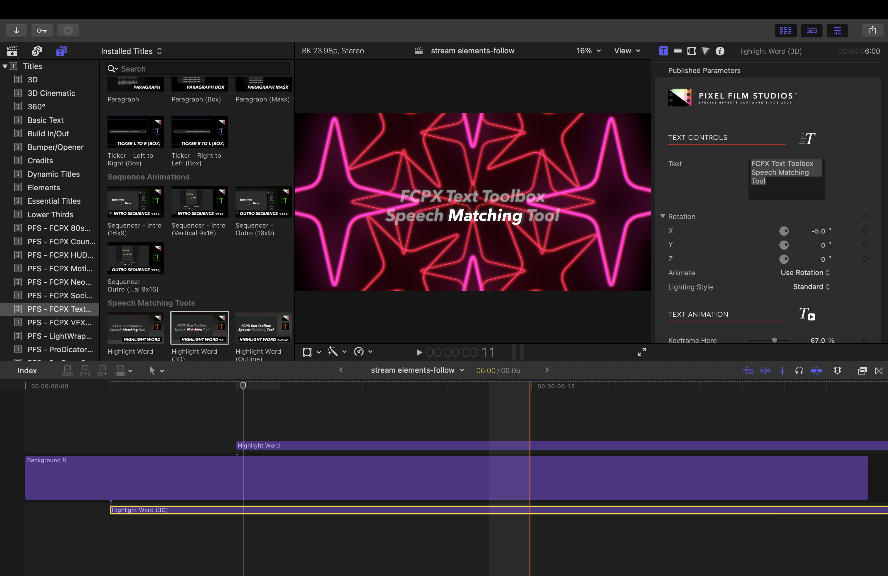
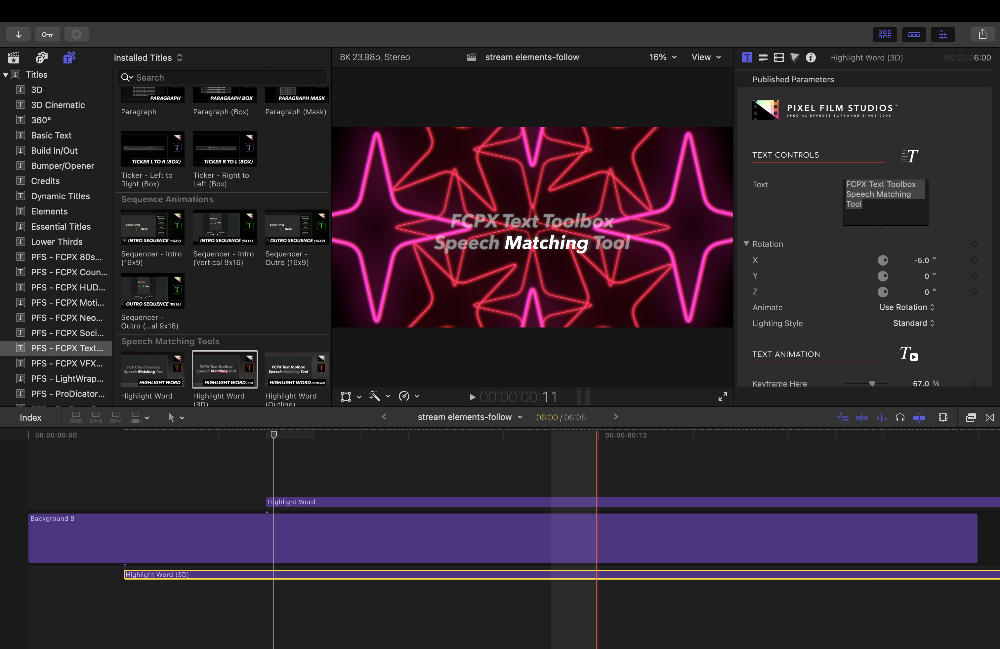
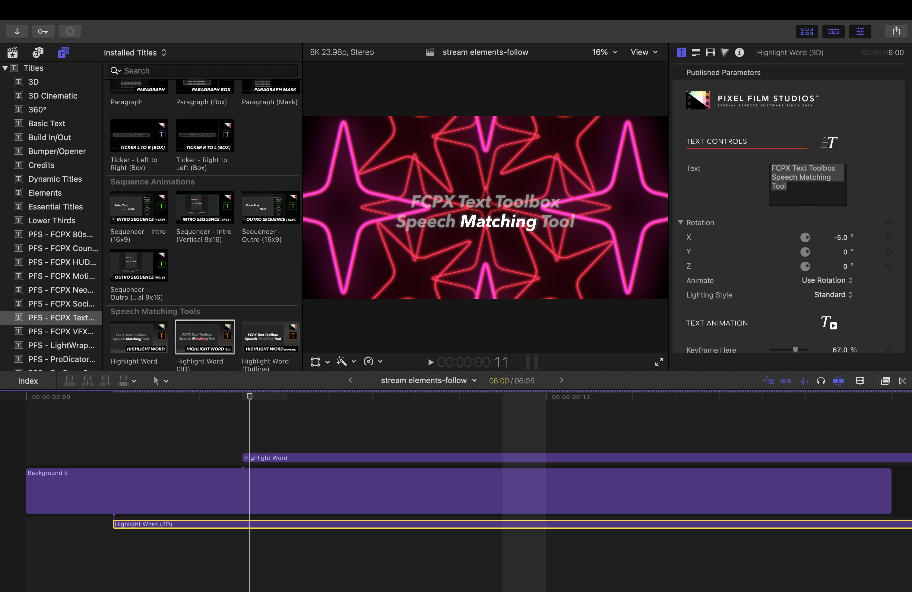

Editing
Editing is where the magic happens—color grading, sound design, and pacing. Showcase before/after stills or short clips here.

 


Editing is where the magic happens—color grading, sound design, and pacing. Showcase before/after stills or short clips here.

When I Edit, Where I Start Depends Heavily on The Project I Am Working On. If I Need to Create Some Overlays that Are Animated, I Will Start With Final Cut Pro as I Have A Lot Of Different Plugins That I Like To Use. If I Am Just Putting Clips Together That Require No New Overlays or Animations, I Will start With Adobe Premiere Pro. Recently, For All OF My Thumbnails, I Have Been using Adobe Photoshop.